UDN
Search public documentation:
MaterialFunctions
日本語訳
中国翻译
한국어
Interested in the Unreal Engine?
Visit the Unreal Technology site.
Looking for jobs and company info?
Check out the Epic games site.
Questions about support via UDN?
Contact the UDN Staff
中国翻译
한국어
Interested in the Unreal Engine?
Visit the Unreal Technology site.
Looking for jobs and company info?
Check out the Epic games site.
Questions about support via UDN?
Contact the UDN Staff
UE3 Home > Materials & Textures > Material Functions
Material Functions
Overview
Material Functions are little snippets of material graphs that can be saved in packages and reused across multiple materials. They are edited in the material editor like a normal material, but with some restrictions on what nodes can be used. When used properly, they can reduce material redundancy which in turn reduces artist maintenance effort keeping those duplicate expressions in sync, and the inevitable bugs that arise when one duplicate is missed during a modification.Function basics and quick setup
Functions are created through the content browser just like a material. Right click in an empty area and choose New Material Function. Functions define their interface to any materials they are used in by function inputs and outputs, which are just nodes that you place in the function. Inputs and outputs can be named, so that people using the function in their materials know what they mean. There must be at least one output for a function to be valid, and input and output names must be unique. 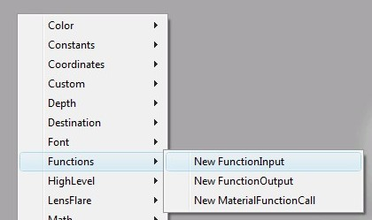 The heart of the function is what it does between those inputs and outputs. This example takes two layers and blends them together like a photoshop screen blend. The function abstracts the details from an artist that might want to use it, so they don't have to actually know the math of a screen blend to use a screen blend operation. If anyone wants to change the way the screen blend operation works later, they can do so to this function and the change will automatically be propagated to all materials that use it. 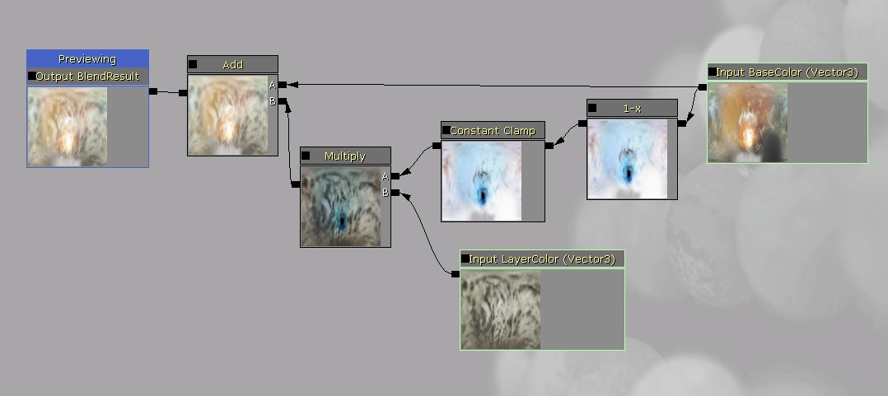 Once you make changes to a function you have to click the apply button to propagate the changes to the function asset and any materials using the function. To use a function in a material, simply drag and drop the function's icon from the content browser into the material. Alternatively you can hold down F and click in the material editor with the function selected in the content browser. This creates a MaterialFunctionCall node which references the function asset you created. Then you need to connect nodes to the inputs and connect the outputs to where ever you want it to be used in the material. 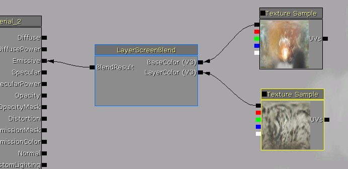 Inputs have a specified type that is required of any expressions connected to them, which is displayed in a few letters next to the input connectors when the function is used in a material. In this case both the inputs were vector3's so V3 is displayed. Anything connected to an input when used in a material must be convertible to the input type.Propagation
When you edit a function and click apply changes, the new version is propagated to any loaded materials or functions which reference this function. Any unloaded materials which reference the function will be updated with the changes when they are next loaded. When an input or output is deleted from a function and the changes are propagated, any links to these deleted connectors in materials that use the function will be broken! It's important to be aware of this, because the propagation can't be undone. The more materials a function is used in, the bigger the potential for breakage, so be careful. All loaded materials that use the function will be marked dirty when the function change is propagated, which can be used to see which packages could be resaved to prevent increased load times. You can find all the loaded materials which use a function by right clicking in the content browser and choosing this option: 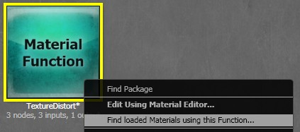Organization
Functions are expected to be created by a few people, but used by many people, so it's important to have good documentation of what the functions do, and what values are needed for their inputs and outputs. For this reason, functions have several documentation fields on top of the function name and input/output names:- Function description - Click on an empty area to see the function's properties, where Description is located. If you are going to fill in only one description field, make it this one! It will be displayed as a tooltip anywhere that the function is shown (content browser, material function library, function call node).
- Input / output descriptions - These are located on the input and output nodes in a function. They show up as tooltips when hovering over the function call node's inputs and outputs.
Material function library
The material editor has a window called the Material function library, which contains a categorized and filterable list of available material functions. This list is populated from any loaded functions, but also from any functions which were not loaded but were found through the ContentBrowserDatabase which is used by the Content Browser. 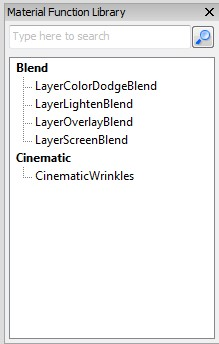 You can hover over these entries to see their Description as a tooltip, or drag and drop one into your material. For a function to show up in the function library, it needs to have the bExposeToLibary value checked in the function's properties. 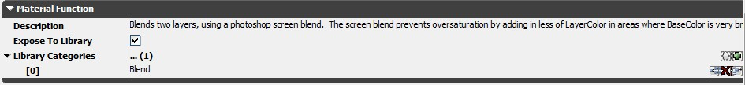 Be sure to specify meaningful library categories, and try to reuse existing categories instead of creating new ones.Previewing
When editing a material function, the preview window shows whichever node is being previewed. Most of the time you will want to preview a function output. 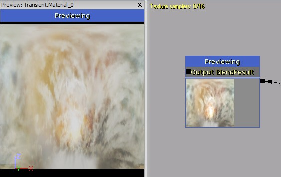 Function input nodes have some options for specifying preview values, since they don't know the actual values they will be used with in a material. Each input has a built in PreviewValue can be used to show a constant for float input types. Function inputs also have a 'Preview' connector which allows you to override that built in value with any value that matches the input's type. In this example a texture sample has been used to provide the preview for a float 3 input. 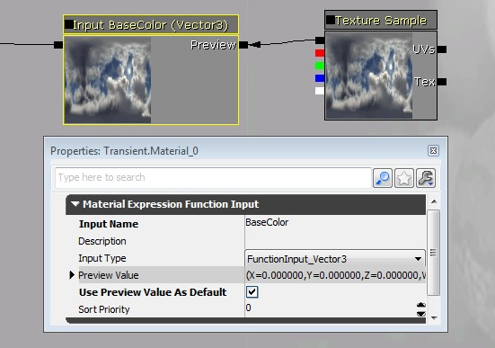 In this example, a Static Bool node is being used to provide a default value for a static bool input. 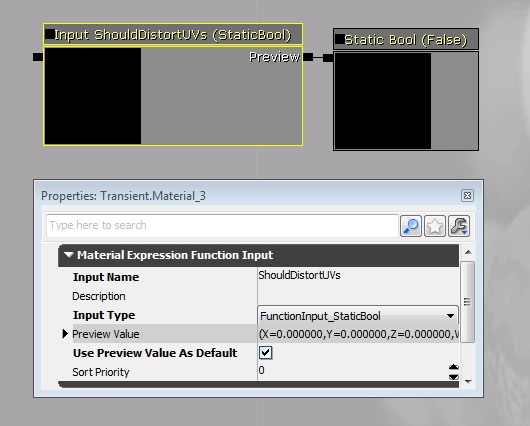 Note that the input has an option called "Use Preview Value As Default". When this is enabled, the preview value will be used any time the function is used in a material and nothing is connected to that input, instead of causing a compilation error. This makes the input an optional input, so it is drawn in gray.Parameters
Functions are not allowed to contain parameter node types, as this would cause name conflicts with other functions declaring the same name, but you can still use parameters by passing in the values through inputs. To use a vector or scalar parameter value with a function, simply pass it in as a function input vector type. To use a texture parameter with a function, make a texture input and connect it to the texture object override in a texture sample node: 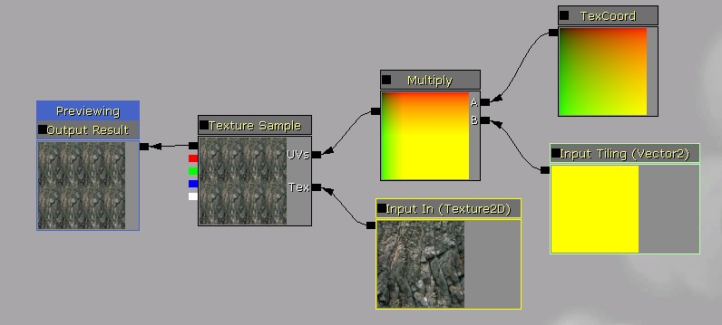 Then in the material that uses the function, place a TextureObjectParameter node and connect it to the texture input: 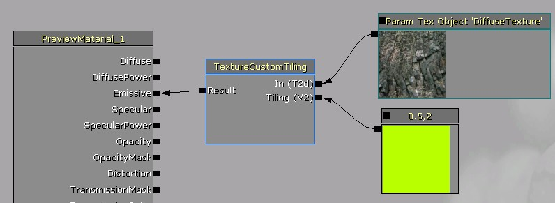 Similarly for static switch parameters, make a static bool input and connect it to a StaticSwitch node: 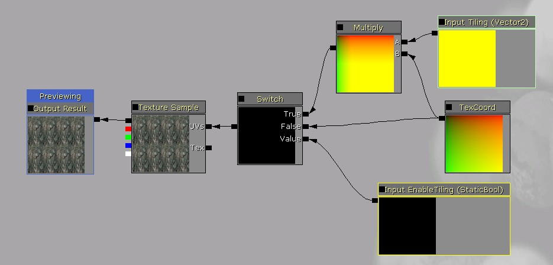 Then in the material that uses the function, place a StaticBoolParameter node and connect it to the static bool input: 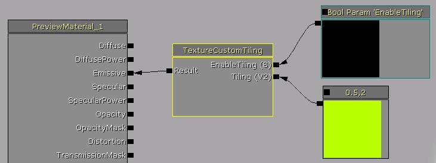Function related nodes
- MaterialFunctionCall - Allows using an external function from another material or function. The external function's input and output nodes become inputs and outputs of the function call node.
- FunctionInput - Can only be placed in a material function, where it defines one of the function's inputs.
- FunctionOutput - Can only be placed in a material function, where it defines one of the function's outputs.
- TextureObject - Useful for providing a default texture for a texture function input within a function. This node does not actually sample the texture, so it must be used in conjunction with a TextureSample node.
- TextureObjectParameter - Defines a texture parameter and outputs the texture object, used in materials that call a function with texture inputs. This node does not actually sample the texture, so it must be used in conjunction with a TextureSample node.
- StaticSwitch - Performs a compile time choice between two inputs, based on the input value.
- StaticBool - Useful for providing a default bool value for a static bool function input within a function. This node does not switch between anything, so it must be used in conjunction with a StaticSwitch node.
- StaticBoolParameter - Defines a static bool parameter and outputs the static bool value, used in materials that call a function with static bool inputs. This node does not switch between anything, so it must be used in conjunction with a StaticSwitch node.